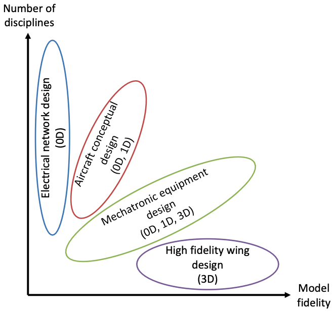
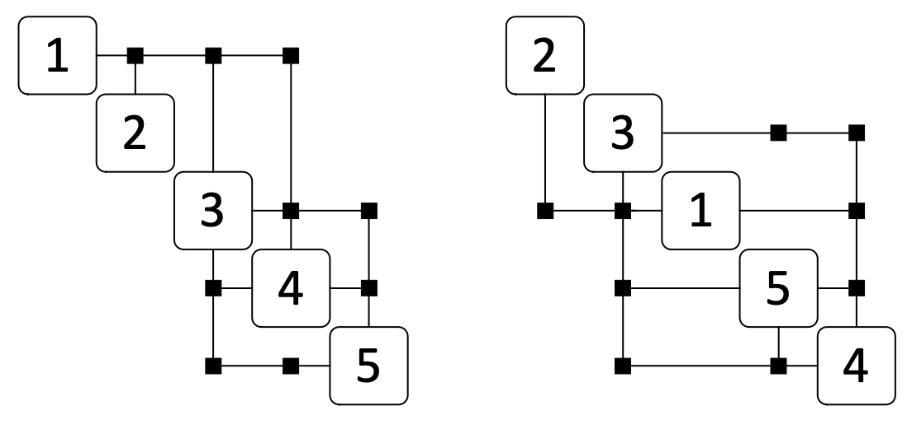
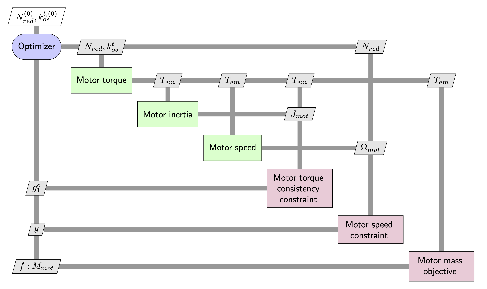
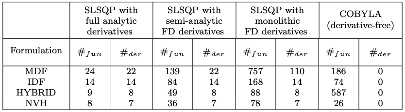

5.1. MDAO (Multidisciplinary Design Analysis and Optimization)#
Warning
This course is under construction…
5.2. What is MDAO?#
MDAO stands for Multidisciplinary Design Analysis and Optimization. It is a scientific domain developed to adress the design optimization of multidisciplinary engineering systems that:
involve several disciplines/components
involve the presence of multidisciplinary couplings (algebraic loops)
involve a large number of design variables and constraints (10 to 100 000)
Therefore, it is particularly interesting for the sizing and optimization of mechatronic systems.
NOTE: MDA vs MDAO: Performing an MDA means to perform a system analysis that solves the multidisciplinary couplings without varying the design variables.
5.2.1. MDAO of engineering systems: # of disciplines vs fidelity of models#

5.2.2. MDAO of engineering systems: multidisciplinary couplings#
The design of engineering systems can imply the presence and solving of multidiscipliary couplings. A bad ordering of disciplines or computation steps can lead to the creation or addition or creation of couplings:

5.2.3. MDAO frameworks#
All commercial modelling and optimization software (Matlab, Wolfram Mathematica…) can be used to implement MDAO techniques. However, recently Python scientific framework have been developed in order to provide a framework to implement such problem more easily and solve them more efficiently:
OpenMDAO (NASA)

GEMSEO (IRT Saint Exupery)

5.2.4. Gradient-based MDAO: derivate computation techniques#

There are different possibilities to compute gradients (derivatives) using typical MDAO frameworks:
full analytic derivative method uses the analytic derivatives of the model analysis functions (obtained by hand) and the analytic derivatives of the total model
semi-analytic derivative method is similar to the full analytic except that the model analysis functions derivatives are computed numerically (e.g. Finite Difference (FD))
monolithic derivative method estimates directly the total system derivatives numerically (e.g. FD) and does not require any knowledge of analysis function derivatives
5.2.5. MDAO formulations#
For solving an MDAO problem multiple formulations (or architectures) can be implemented. In 2012, Martins and Lambe proposed a survey of these formulations.

5.2.6. MDAO formulations: distributed vs monolithic (1/2)#
Distributed formulations use more than one optimizer:

Monolithic formulations use only one optimizer:

5.2.7. MDAO formulations: distributed vs monolithic (2/2)#
The Sellar problem is a simple and well known test case for MDO formulations:
Where \(y_{1} = z_{1}^2 + x_{1} + z_{2} - 0.2 y_{2}\) and \(y_{2}=\sqrt{y_{1}} + z_{1} + z_{2}\).
The number of function evaluation is a key metric to assess the computational cost as it enables to avoid considering the performance of the computer used.
# Function evaluations |
Discipline 1 |
Discipline 2 |
|---|---|---|
IDF |
60 |
50 |
MDF |
222 |
216 |
CO |
5647 |
8252 |
BLISS |
3344 |
3130 |
BLISS-2000 |
818 |
108 |
In the context of sizing we are particularly interested in computation time as we are in a decision making process. Hence, we generally use monolithic formulations.
5.2.8. Monolithic formulations: High dynamic EMA case study#

5.2.9. Monolithic formulations: MultiDisciplinary Feasible (MDF)#

5.2.10. Monolithic formulations: Individual Discipline Feasible (IDF)#

5.2.11. Monolithic formulations: Hybrid#

5.2.12. Monolithic formulations: Normalized Variable Hybrid (NVH)#

5.2.13. Monolithic formulations: Performance comparison#

The NVH formulation is an intrusive formulation as it requires to redefine the optimization problem and models. However, it provides significant reduction of computational cost.